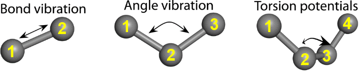
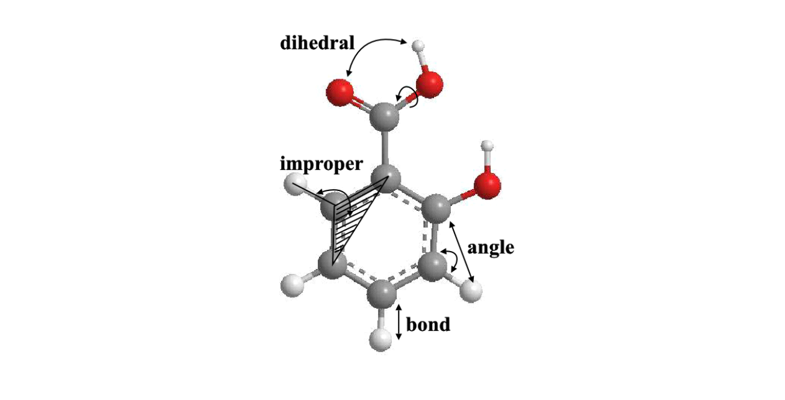

Bonded interactions¶
Intra-molecular or bonded interactions consist of energy components that are short-range in nature and usually applied within a molecule to maintain its geometrical structure.

Bonded interactions consist of several energy components as follows:
Bond interaction. Also called a 1-2 interaction. It describes interactions between two bonded atoms.
Angle interaction. Also called a 1-3 interaction. It describes interactions between two atoms that are bonded to a common atom.
Dihedral (torsional) interaction. Also called a 1-4 interaction. It describes the angular interaction drawn between planes 1,2,3 and 2,3,4.
The diagram below shows a summary of these interactions.
{kind=link}
Improper interaction. This is a type of dihedral interaction that is imposed on certain molecular functional groups to preserve a particular geometry for three atoms around a central atom. Examples of these functional groups are carbonates and carbonyls, where the improper interaction is used to maintain a planar conformation (i.e. \(\alpha = 0^{\circ}\)).

The diagram below illustrates how these interactions are applied to a molecular structure (salicylic acid).
{kind=link}
So far, we have discussed directly bonded interactions. Depending on the type of FF, other types of cross-component bonded interactions can exist. For instance, bond-bond interactions, where cross-component interactions are described in terms of distances between two successive bonds (1-2 and 2-3). Other cross-components may also involve more extensive geometries such as angle-angle, bond-angle and even angle-torsion interactions.